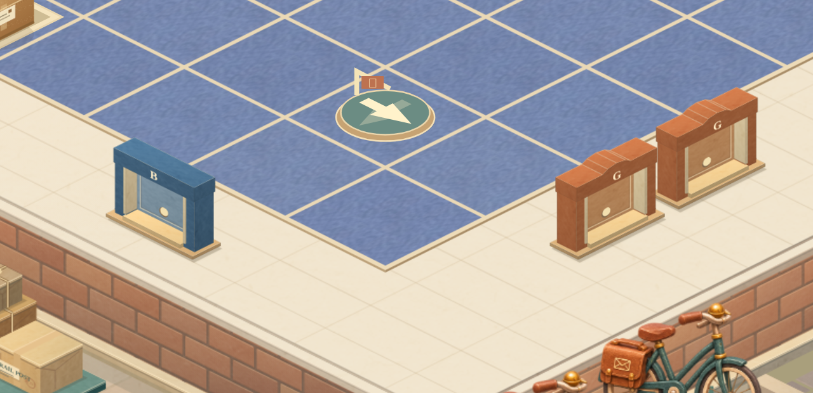
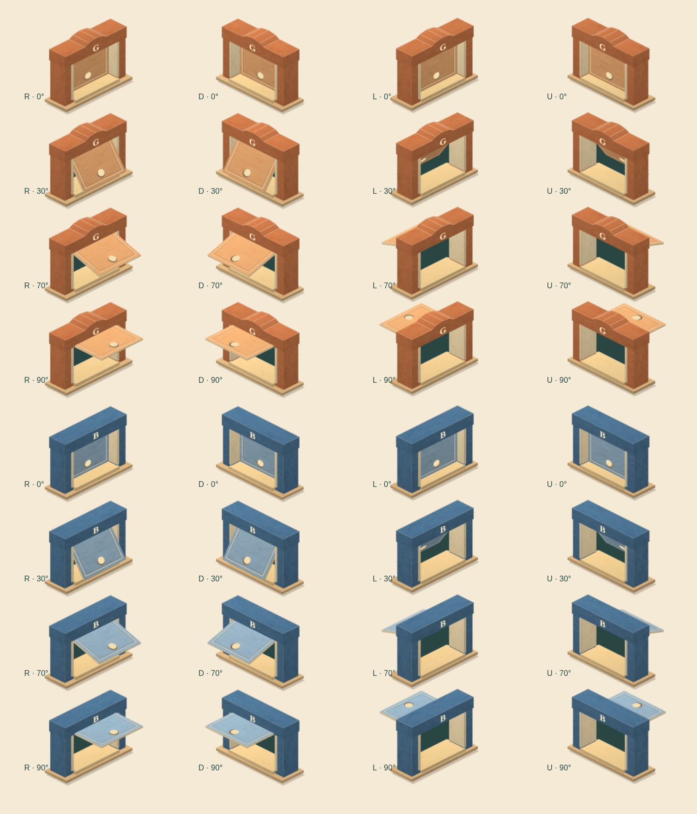
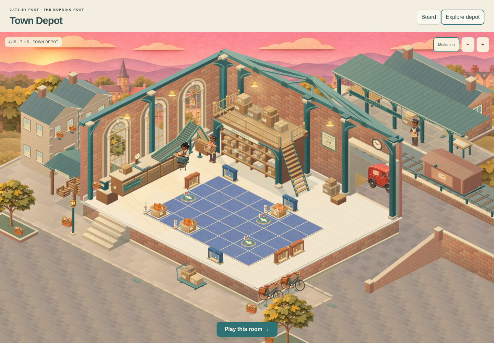
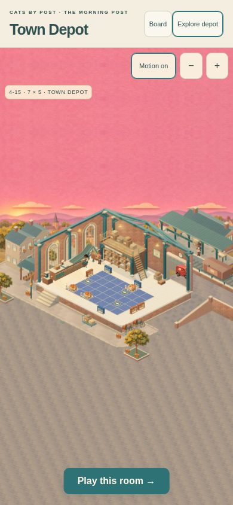

CATS BY POST · TOWN DEPOT
Flaps made from paper
Solid card frames, recessed doors and layered thresholds. The panels keep their thickness as they swing, with the same paper fibres and warm lighting as the room.

Actual playable Canvas · the existing 7 × 5 board.
The change
Through the doors
The original cats, delivery timing and closing bounce are retained. These frames come directly from the playable renderer.
Inspect contact on each edge
Inspect the construction and full room



All 25 deliveries and all four board sizes are preserved. Board picking, chapters, progress and saves are unchanged. The earlier courier and postal-slide corrections are included.
Separate Depot study preview. Construction and verification handover · File manifest. Game integration remains under review.